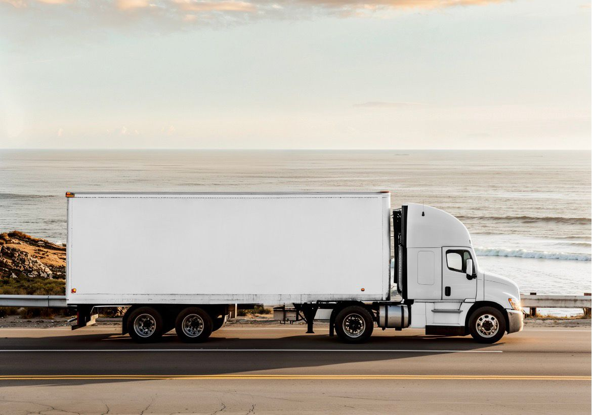

Transporte de cerámica
Es nuestro trabajo de cabecera: palets, azulejo, gres y material cerámico con estiba y entrega coordinada.

Empresa de Salamanca
Transporte de mercancías por carretera desde Salamanca. Especialistas en cerámica: palets bien estibados, ventanas claras y trato directo.

El vehículo
No hay flota de cisternas ni equipos raros: hay un camión convencional, el de siempre, preparado para palets de cerámica y mercancía general. Eso da fiabilidad: misma caja, misma estiba, misma forma de trabajar en cada ruta.
Planificar una rutaSoluciones de transporte
Servicio B2B desde Salamanca: interlocución directa y cuidado de la carga, sobre todo material cerámico.
Es nuestro trabajo de cabecera: palets, azulejo, gres y material cerámico con estiba y entrega coordinada.
Cargas de almacén y distribución que caben en caja de carretera, con los mismos criterios de estiba.
Origen, destino, horario de carga y papeles acordados antes de salir. Sin sorpresas a pie de muelle.
Origen, destino, ventana horaria y documentación, con confirmación previa de disponibilidad.
Cargas reales
Fotos de trabajo diario: carga de azulejo, sacos y palets en caja abierta, en almacén y en ruta.
Cobertura nacional
Madrid, Levante, Andalucía o el norte: salimos de Salamanca hacia el nodo que pida cada carga, con disponibilidad confirmada.
Madrid y alrededores, con ventanas de muelle acordadas.
Valencia y Barcelona para distribución de cerámica y palets.
Sevilla, Bilbao y el resto de península, según disponibilidad.
Operativa comercial
La ventaja no está solo en mover carga: está en responder bien, coordinar sin ruido y cuidar cada fase del servicio.
Origen, destino, tipo de mercancía, ventanas horarias y requisitos de acceso.
Ruta, tiempos, documentación y confirmación previa con el cliente.
Coordinación durante el servicio y cierre con justificante o documentación acordada.
Por qué elegirnos
Operamos como empresa de Salamanca, con salida a los corredores de Castilla y León y el resto de la península.
Interlocución clara para empresas que prefieren resolver rápido y sin capas innecesarias.
Es en lo que más insistimos: conocemos la carga, el paletizado y las entregas de material cerámico.
Confirmación de disponibilidad, coordinación de ventanas y seguimiento hasta la entrega.
Presupuesto rápido
Indique origen, destino, mercancía y fecha. Al enviar se abrirá su correo con la solicitud lista para remitir a la empresa.
Contacto comercial
Atendemos solicitudes de empresas, operadores logísticos y responsables de almacén que necesitan transporte de cerámica u otra mercancía de camión, con interlocución cercana desde Salamanca.